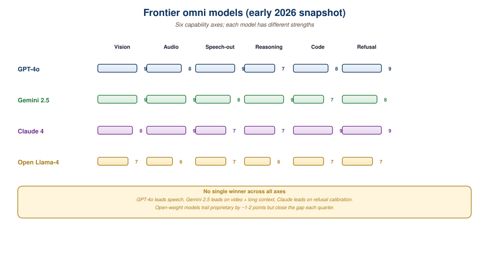

"The omni demo is twenty seconds of magic followed by an API price list."
Developer reaction to the GPT-4o launch, May 2024
Four frontier omni models defined the 2024-2026 state of native multimodality. OpenAI's GPT-4o was the May 2024 unveiling that made native voice mode mainstream. Google DeepMind's Gemini 2.0 and 2.5 brought long-context multimodal (up to 2M tokens including image and audio) and tool-use to the same model. Meta released the open-weights Chameleon to prove early fusion at scale, then Llama-4-Omni in 2025 brought any-to-any to open source. This section unpacks each model's architecture, capability profile, and 2026 cost structure, plus the practical guidance on when each is the right pick.

37.4.1 GPT-4o and the Realtime API
GPT-4o (omni), released May 2024, was OpenAI's first natively multimodal model. The full architecture was not disclosed, but the public information and behavior suggest:
- A single transformer trained on interleaved text, audio, and image tokens (early fusion).
- Discrete audio tokenization at ~24 Hz frame rate (compatible with low-latency streaming).
- Image inputs as patch tokens (likely SigLIP-style encoder).
- Output image generation through a separate diffusion decoder gated by the model's emit tokens (a hybrid pattern; see Section 37.3).
The capability headline was the Realtime API: an audio-in, audio-out conversational loop with under 320ms time-to-first-audio-token. Voice mode preserves paralinguistic cues (emotion, sarcasm, sighs) that pure-text pipelines lose. Pricing for the Realtime API in 2026 sits around \$0.06 per minute of audio input and \$0.24 per minute of audio output, with \$5 / \$20 per million text input/output tokens for the text path.
# GPT-4o Realtime API: WebSocket session for streaming audio.
# See Section 38.2 for the full protocol walkthrough.
import asyncio
import websockets
import json
async def realtime_voice_chat():
url = "wss://api.openai.com/v1/realtime?model=gpt-4o-realtime-preview"
headers = {"Authorization": f"Bearer {api_key}", "OpenAI-Beta": "realtime=v1"}
async with websockets.connect(url, extra_headers=headers) as ws:
await ws.send(json.dumps({
"type": "session.update",
"session": {
"modalities": ["text", "audio"],
"voice": "alloy",
"input_audio_format": "pcm16",
"output_audio_format": "pcm16",
"turn_detection": {"type": "server_vad"},
}
}))
# Stream PCM-16 audio chunks of ~100ms each.
async for chunk in mic_chunks():
await ws.send(json.dumps({
"type": "input_audio_buffer.append",
"audio": b64(chunk),
}))
# Server emits response.audio.delta events with TTS chunks.37.4.2 Gemini 2.0 and 2.5: Native Multimodal at Long Context
Google DeepMind's Gemini family was the first frontier-scale natively multimodal model (Gemini 1.0 in December 2023). Gemini 2.0 (December 2024) and Gemini 2.5 (mid-2025) deepened the capability:
- Long-context multimodal: Gemini 1.5 Pro shipped 2M-token context, including interleaved images, audio, and video frames. A 1-hour video can be passed in full at native temporal resolution. Gemini 2.5 Pro extended this to ~10M tokens with optimized retrieval.
- Native audio generation and understanding: voice and audio streams are tokenized at a higher rate than GPT-4o (sufficient for music understanding, not just speech).
- Tool use and agent capabilities: Gemini 2.0 was the first frontier model to ship with native agent tooling (web search, code execution, mouse-and-keyboard control) as built-in capabilities.
- Video generation: Veo 3 (the Gemini-aligned video model) integrates with the LLM for prompt expansion and post-generation editing.
Pricing in 2026: Gemini 2.5 Pro is \$1.25 per million input tokens and \$10 per million output tokens for the standard context window, with audio and image tokens billed at modality-specific rates. Gemini 2.0 Flash is roughly 5x cheaper and remains the workhorse for high-volume multimodal applications.
37.4.3 Chameleon and Llama-4-Omni: Open-Source Frontier
Meta's Chameleon (Team, 2024) was a milestone: the first open-weights frontier-scale early-fusion multimodal model. Chameleon-7B and Chameleon-34B handle interleaved text and image input and output, all through a single autoregressive transformer over discrete tokens. The model uses:
- A VQ-VAE-style image tokenizer producing 1024 tokens per 512x512 image.
- BPE text tokenizer with vocabulary extended by the image codebook.
- Standard decoder-only transformer (similar to Llama 2) with QK-norm for training stability.
Chameleon's released image generation capability was limited (the open weights had it disabled at launch for safety reasons), but the architectural blueprint influenced everything that followed.
Llama-4-Omni (Meta, 2025) inherits Chameleon's early-fusion DNA and extends it with audio I/O. The model is positioned as the open-source competitor to GPT-4o, with three sizes (8B, 70B, 400B+ MoE) and weights released under a permissive license for research. Inference cost on commodity hardware: a Llama-4-Omni-8B serves voice conversations at ~\$0.01 per minute on a single A10G, an order of magnitude cheaper than GPT-4o Realtime.
37.4.4 Capability and Cost Matrix
| Capability | GPT-4o | Gemini 2.5 Pro | Llama-4-Omni | Chameleon |
|---|---|---|---|---|
| Text reasoning (MMLU-Pro) | ~75% | ~80% | ~73% | ~62% |
| Image understanding (MMMU) | ~70% | ~76% | ~67% | ~50% |
| Audio in (speech ASR) | Strong | Strong | Strong | None |
| Audio out (TTS) | Strong | Strong | Moderate | None |
| Image generation | Yes (gated diffusion head) | Yes | Yes | Disabled in open weights |
| Video generation | Via Sora 2 | Via Veo 3 | Limited | None |
| Long context | 128k | 2M to 10M | 128k | 4k to 16k |
| Realtime audio API | Yes | Yes (Gemini Live) | Self-hosted | No |
| Open weights | No | No | Yes | Yes (partial) |
| Approx. 2026 cost per 1M tokens | \$5 in / \$20 out | \$1.25 in / \$10 out | Self-hosted | Self-hosted |
Llama-4-Omni's release was the first time an open-weights model approached the capability frontier on every modality. For research and on-premises deployment (regulated industries, latency-critical applications, fine-tuning), this is a step change. The downside: omni models are expensive to serve, and the open-weights versions assume you have multi-GPU infrastructure. For pure cloud consumption, Gemini and GPT-4o remain easier defaults.
37.4.5 Architecture Deep-Dive Notes
Detailed architectures are confidential for the proprietary models, but the open papers and the behavior in production give consistent clues:
- GPT-4o: appears to be early fusion at the input, late fusion for image generation. Audio in/out uses a discrete codec at ~25 Hz. Estimated parameter count: 200B to 400B in MoE form.
- Gemini 2.5: native multimodal training on Pathways infrastructure, with TPU v5p deployment. Long context relies on a learned compression scheme that retrieves relevant chunks from a memory bank, similar in spirit to Section 23.1's RAG patterns but learned end-to-end.
- Llama-4-Omni: early fusion, RVQ audio tokenizer at 50 Hz, image tokenizer at ~1024 tokens per image. MoE for the 400B variant; dense for smaller sizes. Released alongside training code, which makes the architecture inspectable.
- Chameleon: dense decoder-only, fully early fusion, 7B and 34B sizes. Used QK-norm and clamped attention to stabilize training across modalities, an architectural lesson that propagated to most subsequent omni models.
37.4.6 The 2026 Pick List
- You need the smoothest voice agent experience and have OpenAI account: GPT-4o Realtime.
- You need long-context video or document understanding: Gemini 2.5 Pro.
- You need to fine-tune for an on-premises voice assistant: Llama-4-Omni.
- You are doing academic research on multimodal training: Chameleon or Llama-4-Omni (open weights, reproducible).
- You need image generation tightly coupled with conversation: Gemini 2.5 Pro or GPT-4o.
- You need agent tooling natively integrated: Gemini 2.5 Pro.
- You need lowest cost at scale and can tolerate quality gap: Gemini 2.0 Flash or self-hosted Llama-4-Omni-8B.
Combine multiple of these for a production stack. A common 2026 pattern: Gemini 2.5 Pro for offline analysis and long-context tasks, GPT-4o Realtime for live voice, Llama-4-Omni for on-prem fine-tuned use cases. The router from Section 37.1 chooses based on the request shape.
37.4.7 Evaluation: Beyond the Leaderboards
Benchmark scores (MMLU-Pro, MMMU, MMB, LiveBench) capture capability under standardized conditions but miss two factors that often dominate production decisions:
- Voice agent tone and persona: GPT-4o Voice's prosody feels noticeably different from Gemini Live's. Audition the models with your actual application prompts before committing.
- Latency under real load: published TTFT figures assume warm cache, light load. Production load patterns can double the latency on any of these systems.
The recommended evaluation protocol: 100 to 500 real prompts from your domain, run each through every candidate model, score the outputs on a 5-point rubric covering accuracy, helpfulness, tone, and latency. The cost of running such an eval (~\$200 in API spend plus a few hours of human time) is dwarfed by the cost of picking the wrong frontier model.
The 2026 frontier omni landscape is GPT-4o, Gemini 2.5, Llama-4-Omni, and Chameleon, with capability profiles differentiated by modality strength, context length, and licensing. Gemini leads on long context and tool integration; GPT-4o leads on conversational voice; Llama-4-Omni leads on open-weights deployability; Chameleon's contribution is the architectural template for early-fusion training. The right pick depends on which of the four mattering most for your application, and most production stacks compose multiple of them.
- Why does Gemini 2.5 Pro have a 2M-token context window while GPT-4o is stuck at 128k? What architectural difference enables this?
- Llama-4-Omni-8B serves voice at \$0.01/min versus GPT-4o Realtime at \$0.30/min. List three reasons OpenAI's price is justified for some applications.
- You need a multimodal model for an on-premises medical imaging product where the data cannot leave the hospital. Which model do you pick and what does the deployment look like?
- Chameleon's image generation was disabled in the open release. What does this say about the policy debates around capability releases, and what should a researcher building on Chameleon expect?
What Comes Next
Chapter 37 closes here. Chapter 38: Streaming and Real-Time Multimodal goes deeper on the protocols and latency engineering that make conversational omni-model UX possible.